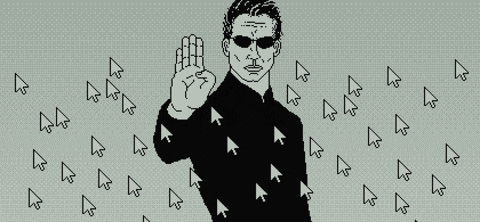

> MISSION_BRIEF.TXT
> ESTABLISHING CONNECTION...
> CONNECTION ESTABLISHED.
> LOADING PERSONAL PROFILE...
Selamat datang di ruang personal saya. Website ini berisi hal-hal yang saya sukai, mulai dari dunia teknologi, coding, game, hingga aktivitas sehari-hari. Dibuat sederhana dengan HTML dan CSS.
> PROJECT 01: CODING
> OPENING DEVELOPMENT FILES...
> STATUS: ACTIVE
Mengenal pemrograman, mencoba teknologi baru, dan membuat project kecil adalah bagian dari kegiatan saya. Buka halaman coding >>
> PROJECT 02: GAMING
> LOADING GAME DATABASE...
> STATUS: READY
Game menjadi salah satu hiburan sekaligus cara saya menikmati cerita, eksplorasi, dan tantangan. Buka halaman gaming >>
SYSTEM_PREVIEW.JPG

> UNKNOWN_SIGNAL.GIF
> INCOMING VISUAL TRANSMISSION...
> SOURCE: UNKNOWN
> SIGNAL DECODED.

A strange signal has entered the system. Keep your connection secure.